内容要点
一段 4 分 18 秒的剪映 AI 数字人制作教程，带你做一个实用又有个性的数字人。流程：打开剪映→开始创作→左侧上方工具栏找到数字人工具。定制形象有两种方案：①用自己形象（点定制形象→加号→上传清晰正面照→自动生成）；②用内置形象（热门/最新分类筛选、超仿真主题更真实、绿幕主题背景透明方便后期换背景），点形象可预览并自动播放旁白。选好形象后右侧滑到底部切换景别/背景（纯色/实体型），先保持空背景方便后续用素材背景。下一步处理文案：可输入/粘贴现成文案，或点蓝色智能文案图标输入需求自动生成几组供选择。再选声音：克隆音色（加号生成）或主题声音/超仿真音色试听挑选；勾选同时生成字幕→点击生成→自动合成语音与动作、口型同步→确认合成。然后加风格化背景：官方素材库搜索风景素材拖到数字人下方（长视频拖多段）；片尾多余用 Ctrl+B 分割删除；带原声的右键分离后一键删除。最后把比例改成 9:16 抖音格式即完成。
知识结构
开始创作→左侧上方工具栏找到数字人工具。
定制形象（上传正面照生成）或内置形象（热门/超仿真/绿幕主题）；点形象预览听旁白。
右侧滑到底部切换景别/背景；保持空背景方便后续用素材。
输入/粘贴文案，或智能文案输入需求自动生成几组。
克隆音色/主题音色/超仿真试听；勾选同时生成字幕→生成→口型同步确认合成。
官方素材库拖风景背景；Ctrl+B分割删除多余；分离原声一键删除。
比例改9:16抖音格式；播放最终效果。
剪映 AI 数字人制作=7步流水线：①入口（开始创作→数字人工具）②形象（定制/内置，绿幕主题背景透明最方便换背景）③背景（先空背景，后续素材补充）④文案（智能文案自动生成几组）⑤声音（克隆音色/主题/超仿真+同时生成字幕）⑥合成（口型与动作自动同步）⑦成片（9:16比例+清理原声）。关键技巧：绿幕形象方便换背景、Ctrl+B 分割删多余素材、右键分离原声一键删除。
00:00-00:19入口：找到数字人工具
开场：「今天我们学AI数字人，今天我就用剪映，一步步带你做一个既实用又有个性的数字人。」
入口路径：「首先打开剪映，点击开始创作，进入剪辑界面后，在左侧上方的工具栏中找到数字人工具，点击进入。」
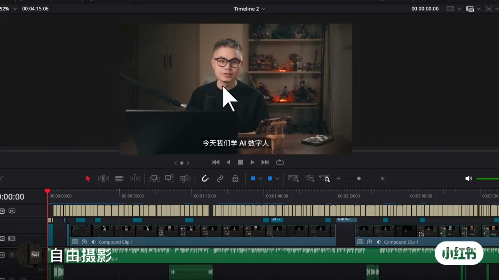
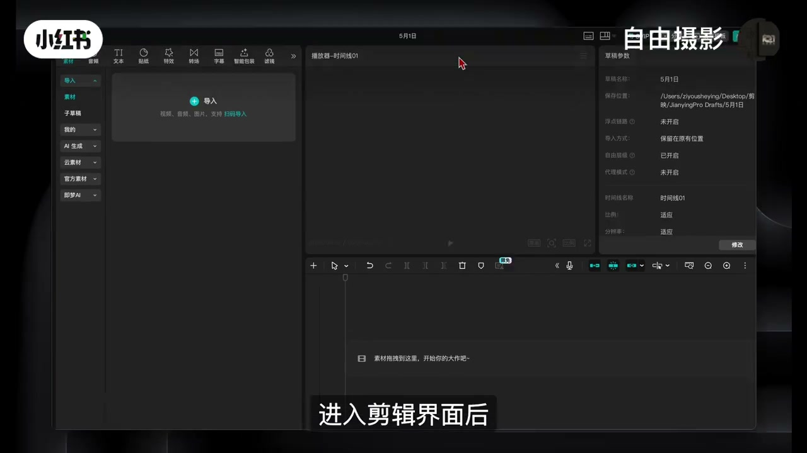
00:19-01:04两种形象方案
用自己的形象：「点击定制形象功能，然后点击加号，上传一张清晰的正面照片，系统会自动生成属于你的AI数字人。」
不想露脸或想快速完成：「可以直接使用剪映内置的形象」，按热门类型、最新等分类筛选，或点小三角箭头展开更多主题。
进阶选择：「想要更真实的效果，可以选择超仿真主题。」点每个形象可以预览效果，系统会自动播放一段旁白方便判断。
换背景友好：「如果你希望自己的数字人更独特与众不同，也方便后期更换背景，那么推荐大家使用绿幕主题，这些形象的背景是透明的，只保留人物本身。」
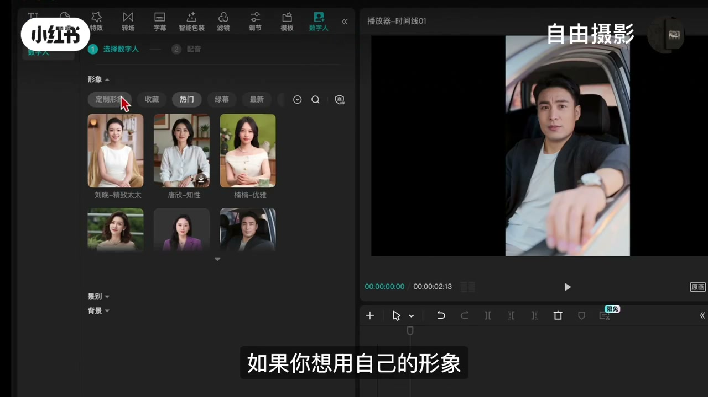
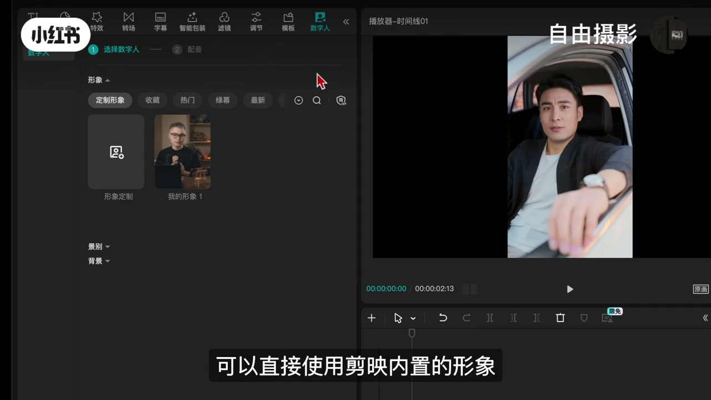
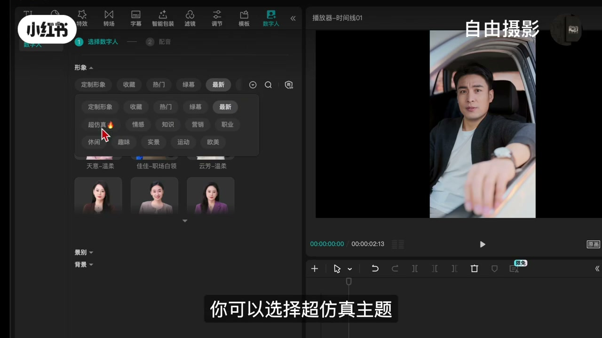
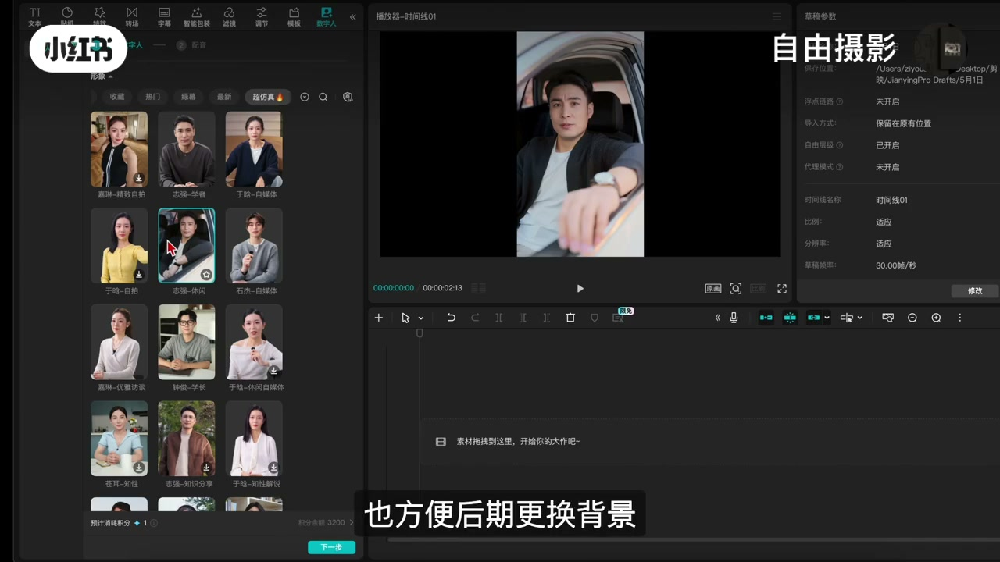
01:04-01:44选形象后的设置
选择好形象后（如学者风格）：「在右侧将功能滑到底部，切换不同的景别，同时还可以切换数字人的背景，比如纯色的背景，或者其他实体型的背景。」
关键决策：「这里我们暂时保持空背景，方便后续切换成素材的背景来使用，让自己的视频更具风格化。」
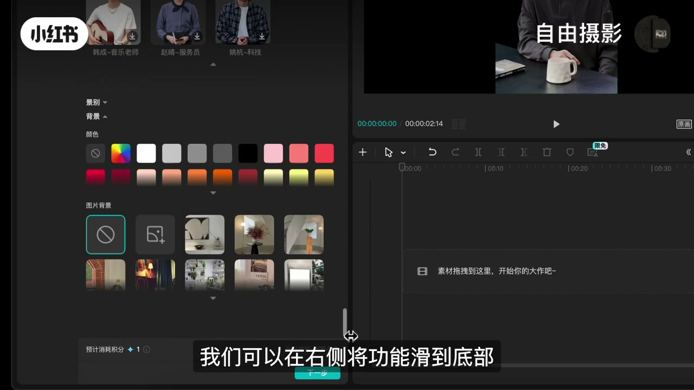
01:44-02:15文案来源
有现成文案：「在这里输入或者直接粘贴也是可以的。」
没有文案：「点击这个蓝色的智能文案小图标，输入你的需求，比如我们这里写一段100字左右的人生感悟，然后点击旁边的箭头，系统会自动生成几组文案供你选择，如果不满意可以点击下一个，直到找到满意的文案，点击确认。」
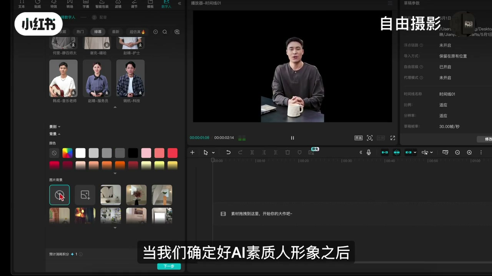
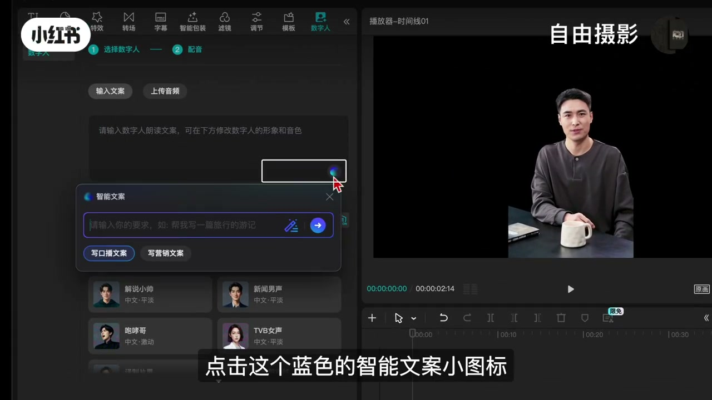
02:15-03:03声音与合成
在文案下方选择一个声音来生成视频。想要中意的声音：通过左边克隆音色，点加号生成克隆的音色；或点右侧小三角选择一种主题生成需要的声音。
更真实的音色：选择超仿真主题，试听不同声音挑选一个想要的。
合成：「挑选好音色之后，勾选下方的同时生成字幕，然后点击生成，系统会自动合成语音和数字人动作，人物形象和口型都会同步匹配，再点击确认合成，你的数字人就已经初步成型了。」
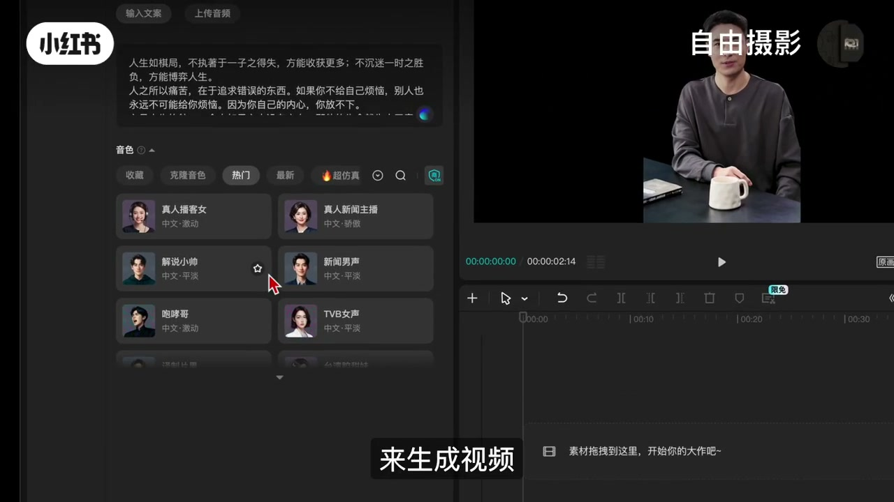
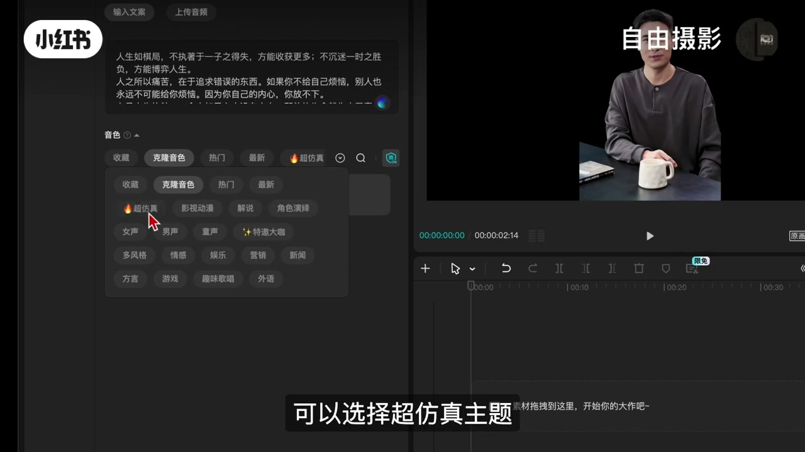
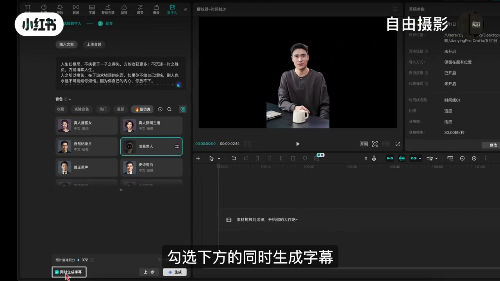
03:03-03:50背景与清理
添加风格化背景：「在左上角找到素材，点击官方素材库，这里我们可以搜索一个风景素材，然后把自己喜欢的背景拖到时间线的数字人下方。」
长视频增加多样性：「如果你的数字人视频比较长，可以多拖几段不同的风景素材。」
清理技巧：「片尾处有多余的风景素材，可以选中它用快捷键Ctrl+B分割，然后删除掉。」如果风景素材带有原声，右键将它们一个一个分离出来，选中所有分离出来的音频，一键删除所有原声。
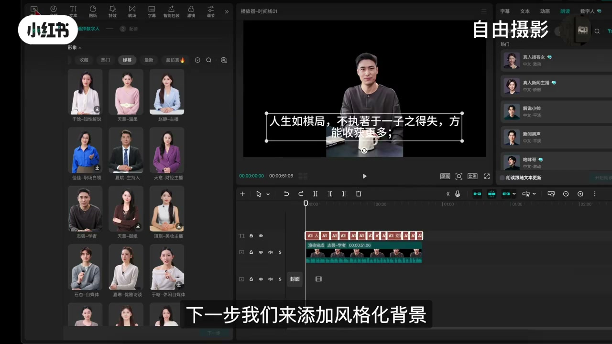
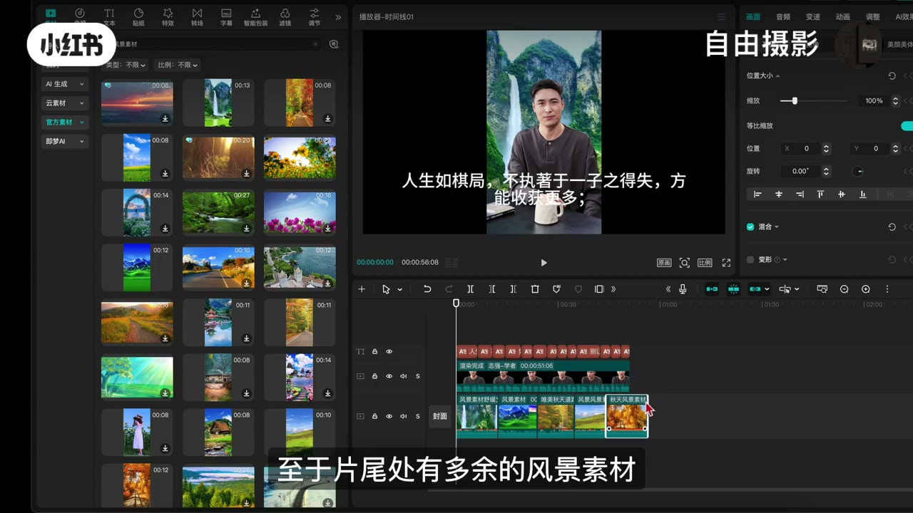
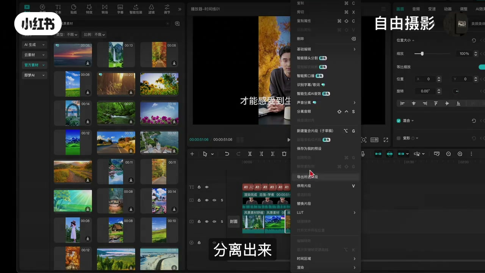
03:50-04:18成片：9:16 抖音格式
「最后一步，我们在监视器右下角找到比例，把它改成9比16的抖音格式，这样一来，一个完整的AI数字人视频就做好了。」
最终效果文案：「人生如棋局，不执着于一子之得失，方能收获更多；不沉迷一时之胜负，方能博弈人生。人之所以痛苦，在于追求错误的东西，如果你不给自己烦恼，别人也永远不可能给你烦恼。」
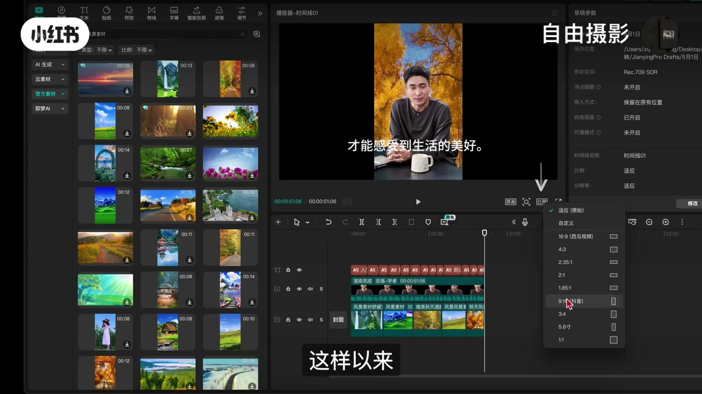
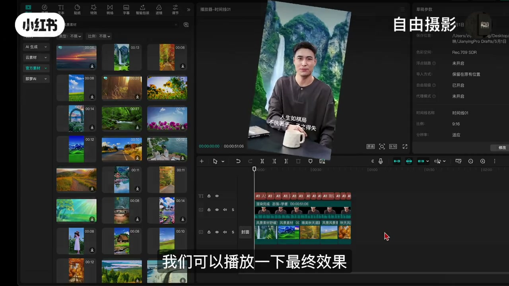
完整转录（118段）
以下文本由 Whisper medium 模型自动转录，可能存在少量识别误差，已尽可能修正。
今天我们学AI数字人 比如
今天我就用简映
一步步带你做一个既实用又有个性的数字人
首先打开简映 点击开始创作
进入简介面后
在左侧上方的工具栏中找到数字人工具
点击进入
在订制数字人形象时
我们有两种方案可以选择
如果你想用自己的形象
可以点击订制形象功能
然后点击加号
上传一张清晰的正面照片
系统会自动生成属于你的AI数字人
如果你不想露脸或者希望快速完成制作
可以直接使用简映内置的形象
你可以点击上方的热门类型
最新等分类进行筛选
也可以点击小三角箭头展开更多的主题
如果你想要更真实的效果
你可以选择超仿真主题
还可以点开下方的三角箭头
来展开更多形象
点击每个形象就可以预览效果
系统会自动播放一段旁白
方便你判断是否合适
如果你希望自己的数字人更独特与众不同
也方便后期更换背景
那么推荐大家使用绿幕主题
这些形象的背景是透明的
只保留人物本身
点击预览后
选择一个你喜欢的形象
比如这个学者风格
点击它就可以
选择好形象后
我们可以在右侧将功能滑到底部
切换不同的景点
同时还可以切换数字人的背景
比如纯色的背景
或者其他实体型的背景
根据需求点击它就可以切换
这里我们暂时保持空背景
方便后续切换成素材的背景来使用
让自己的视频更具风格化
当我们确定好AI数字人形象之后
我们在下方点击下一步
如果你有现成的文案
在这里输入或者直接粘贴也是可以的
如果没有文案
点击这个蓝色的智能文案小图标
输入你的需求
比如我们这里写一段100字左右的人声感悟
然后点击旁边的箭头
系统会自动生成几组文案
供你选择
如果不满意
可以点击下一个
直到找到满意的文案
点击确认
接着在文案下方
选择一个声音来生成视频
如果你有自己想要中意的声音
你可以通过左边这个克隆音色
在这里点击加号生成克隆的音色
你也可以点击右侧小三角
选择一种主题生成需要的声音
如果想要音色更真实的
可以选择超幌帧主题
在视听不同声音
挑选一个你想要的
或者以主题搭配的音色
人生如棋局
不执着于义子之德
人生如棋局
那么挑选好音色之后
勾选下方的同时生成字幕
然后点击生成
系统会自动合成语音和数字人动作
人物形象和口型都会同步匹配
再点击确认合成
你的数字人就已经初步成型了
下一步我们来添加风格化背景
同样在左上角找到素材
点击官方素材库
这里我们可以搜索一个风景素材
然后把自己喜欢的背景
勾到时间线的数字人下方
如果你的数字人视频比较长
可以多拖几段不同的风景素材
这样能让画面更具有多样性
至于片尾处有多余的风景素材
可以选中它用快捷键
Ctrl加B分割
然后删除掉
操作完成后
如果风景素材带有原生
我们可以通过鼠标右键
将它们一个一个的分离出来
然后选中所有分离出来的音频
一键删除所有原生
最后一步
我们在监视器右下角找到比例
把它改成9比16的抖音格式
这样以来
一个完整的AI数字人视频就做好了
我们可以播放一下最终效果
人生如棋局
不只着于义子之得失
方能收获更多
不沉迷意识之胜负
方能博弈人生
人之所以痛苦
在于追求错误的东西
如果你不给自己烦恼
别人也永远不可能给你烦恼
因为你自己的内心
你放不下